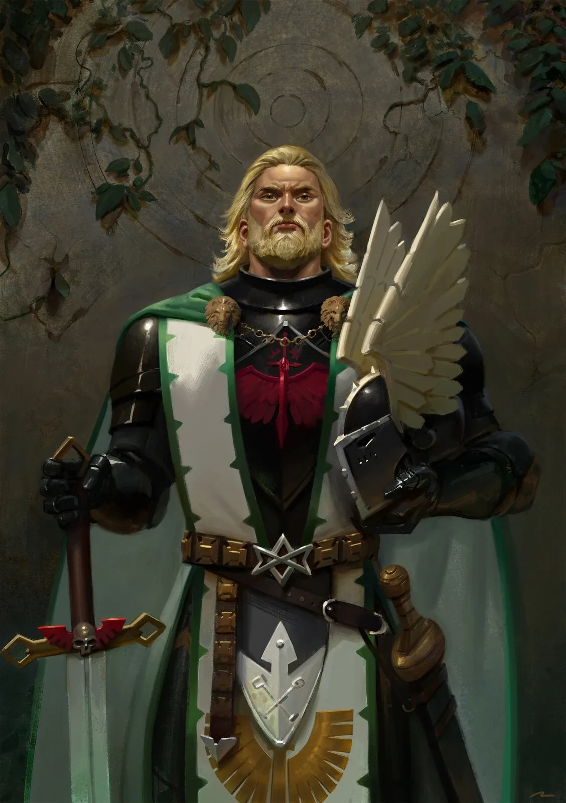

01ภาพรวม



02ต้นกำเนิด — เด็กป่าแห่ง Caliban
แคปซูลของ Primarch คนแรกตกลงในป่าทึบของดาว Caliban ที่เต็มไปด้วยสัตว์ประหลาดดุร้าย เขาเติบโตคนเดียวเหมือนสัตว์ป่า จนอัศวินชื่อ Luther แห่ง Order พบเข้าและพากลับไปเลี้ยงดู เด็กป่าเรียนรู้ภาษา การรบ และจรรยาบรรณอัศวินได้อย่างรวดเร็ว ได้ชื่อว่า "Lion El'Jonson" (บุตรแห่งป่า)
03ผู้นำ Order และการกวาดล้างสัตว์ร้าย
Lion และ Luther กลายเป็นเพื่อนสนิท ร่วมกันนำ Order รวมอัศวินทั้งดาวออกล่าสัตว์ร้ายจนหมดจาก Caliban ความสำเร็จทั้งหมดทำให้ Lion ได้รับการยกย่องเกินหน้า Luther — เมล็ดพันธุ์แห่งความอิจฉาที่เติบโตในภายหลัง
04พบจักรพรรดิ
จักรพรรดิมาถึง Caliban ในปี 846.M30 Lion ยอมรับบิดาทันทีและรับ Legion ที่ 1 ซึ่งตั้งชื่อใหม่ว่า Dark Angels และจัดระเบียบตามแบบ Order ของ Caliban ในฐานะ Legion แรก Dark Angels มีเทคโนโลยีและอาวุธต้องห้ามมากที่สุด
05Great Crusade
Lion คือนักยุทธศาสตร์ที่ไม่มีใครเทียบในภาพรวมของสงคราม ร่วมศึก Rangdan Xenocides ที่โหดร้ายที่สุด แต่เขาเก็บตัว ไม่เข้าสังคม และมีเรื่องบาดหมางกับ Leman Russ หลายครั้ง ส่วน Luther ถูกส่งกลับไปดูแล Caliban — การตัดสินใจที่ทำให้ Luther ขมขื่นหนักขึ้น
06Horus Heresy — สงครามของตัวเอง
ช่วง Heresy Dark Angels อยู่ห่างจาก Terra ทำสงครามแยกกับ Night Lords และ Iron Warriors ในหลายภูมิภาค (Thramas Crusade, Diamat) เข้าร่วม Imperium Secundus บน Macragge ในฐานะ Lord Protector จึงไม่ได้ไปถึง Terra ทันการปิดล้อม ทำให้หลายคนสงสัยในความภักดีของเขา
07การล่มสลายของ Caliban
เมื่อกลับบ้านหลังสงคราม Lion พบว่า Luther และกองกำลังบน Caliban หันไปหา Chaos ทั้งสองดวลกัน Caliban แตกสลาย ผู้ทรยศ (Fallen) ถูกดูดไปทั่วกาแล็กซี Lion หายไป — ตามตำนานถูก Watchers in the Dark พาไปหลับใหลในส่วนลึกของ The Rock
08ตื่นขึ้นในยุคปัจจุบัน
หลังหลับหมื่นปี Lion ตื่นขึ้นในยุค Era Indomitus เดินทางผ่านเส้นทางลึกลับที่เรียกว่า "The Forest" ปรากฏตัวช่วยจักรวรรดิในที่ต่าง ๆ รวมถึงช่วย Dante จาก Angron ในเหตุการณ์ Arks of Omen
09นิสัยและบุคลิก
- เงียบ เก็บตัว เข้าใจยาก
- ยึดหน้าที่เหนือความรู้สึก
- นักยุทธศาสตร์ภาพรวมที่เก่งที่สุดคนหนึ่ง
- มีความลับและไม่ชอบอธิบายตัวเอง
10อาวุธและยุทโธปกรณ์
11ความสัมพันธ์กับจักรพรรดิ

จักรพรรดิแห่งมนุษยชาติ
บิดาผู้สร้างไม่มีบันทึก
ไม่มีบันทึก
Lion El'Jonson คิดอย่างไรกับจักรพรรดิ
- พบกันครั้งแรกยอมรับจักรพรรดิเป็นบิดาและเจ้านายโดยไม่ลังเล
- ยุค Heresyภักดีสุดใจแม้อยู่ห่างสงครามหลัก
- ปัจจุบันตื่นขึ้นมาพร้อมภารกิจปกป้องจักรวรรดิของบิดา
จักรพรรดิคิดอย่างไรกับ Lion El'Jonson
- ภาพรวมจักรพรรดิไว้ใจ Lion ในฐานะบุตรคนแรกและมอบ Legion ที่มีเทคโนโลยีลับมากที่สุดให้ แต่ความสัมพันธ์ไม่ได้อบอุ่นเท่า Horus หรือ Sanguinius
12ความสัมพันธ์กับพี่น้อง Primarch ทุกคน
มุมมองของ Lion El'Jonson ต่อพี่น้องแต่ละคน และมุมมองของพี่น้องต่อเขา — เรียงตามหมายเลข Legion กดชื่อเพื่อไปอ่านเรื่องของพี่น้องคนนั้น ดูภาพรวมทุกคู่ได้ที่ แผนผังความสัมพันธ์ของ Primarch

Fulgrim
ตึงเครียดมองว่าความหลงใหลความงามของ Fulgrim เป็นสิ่งไร้สาระที่บดบังเป้าหมายของสงคราม
ไม่มีบันทึกความรู้สึกที่ชัดเจน
- Great CrusadeLion ไม่มีเวลาให้กับ "ความหมกมุ่นในความงาม" ของ Fulgrim ตามบันทึก เขาเป็นหนึ่งในไม่กี่คนที่ดาบทัดเทียม Fulgrim ได้
- หลัง HeresyFulgrim อยู่ฝ่ายทรยศ ทั้งสองจึงเป็นศัตรู

Perturabo
คู่แข่งระวังตัวเสมอ และพบว่าพี่ชายโกหกเขา
ใช้คำโกหกเพื่อเข้าใกล้ Dark Angels
- Great CrusadePerturabo เคยสร้างรูปปั้นสิงโตทองเพื่อมอบให้ Lion แต่ไม่เคยทำเสร็จ
- Heresy — DiamatPerturabo พบ Lion บนยาน Invincible Reason อ้างว่ากำลังไป Isstvan และโกหกเรื่องการเติมเสบียงที่ Diamat Lion ตามทันแผนและปกป้องโลกโรงงาน Diamat ได้

Jaghatai Khan
สนิทมากเคารพความซื่อตรงของ Khan — Khan คือพี่น้องที่ใกล้ชิดเขาที่สุด
ชื่นชมความตรงไปตรงมาของ Lion
- Great Crusadeตามบันทึก "ในหมู่ Primarch ทั้งหมด Khan คือคนที่ใกล้ชิด Lion ที่สุด" แม้ทั้งสองจะต่างกันมาก แต่ต่างชื่นชมความตรงไปตรงมาของอีกฝ่าย
- Great Crusadeเมื่อ Khan ขอความช่วยเหลือ Lion ไม่ลังเลที่จะไปช่วย

Leman Russ
ซับซ้อนรำคาญความใจร้อนของ Russ แต่นับถือในฐานะนักรบ
แข่งขันกับ Lion ตลอดเวลา และเจ็บใจที่ถูกแย่งเกียรติ
- Great Crusade — Feud of Dulanผู้ปกครองดาว Dulan ดูหมิ่น Russ Russ ขอนำทัพบุกเอง แต่ Lion นำทัพเข้าไปฆ่าผู้ปกครองก่อน Russ โกรธจนต่อยหน้า Lion — กลายเป็นดวลที่ Dark Angels และ Space Wolves เล่าตำนานคนละแบบ
- HeresyRuss ช่วยห้ามไม่ให้ Lion กับ Corax ทะเลาะกันที่ Deliverance
- ท้ายสงครามทั้งสอง Legion กลับมารวมเป็นพี่น้องร่วมรบ ตำนานเล่าว่าแม้ Horus ยังหวั่น Russ ได้ Wolf Blade และ Lion ได้ดาบที่คืนดีกัน
- ปัจจุบันบางตำนานว่า Russ หายเข้า Eye of Terror เพื่อตามหา Lion เพื่อนและคู่แข่งเก่า

Rogal Dorn
ไม่มีบันทึก- ภาพรวมไม่มีบันทึกเหตุการณ์สำคัญระหว่างทั้งสองโดยตรงในเนื้อเรื่องที่เผยแพร่ ทั้งคู่อยู่ฝ่ายภักดี

Konrad Curze
ศัตรูรังเกียจ Curze และไล่ล่าเขาอย่างหมกมุ่น
อยากทำลาย Lion ทั้งร่างกายและจิตใจ
- Heresy — Thramas CrusadeCurze ทิ้งสัญญาณล่อให้ Lion มาเจรจา แล้วดูหมิ่นเขาจน Lion ต่อย ทั้งสองดวล Curze เกือบบีบคอ Lion จนตาย องครักษ์ Dark Angels แทงหลัง Curze ช่วยไว้
- ThramasLion ซุ่มโจมตีกองเรือ Night Lords ทำลายไปราวหนึ่งในสี่ และทำร้าย Curze จนบาดเจ็บสาหัส
- MacraggeCurze แอบซ่อนบนยานของ Lion ไปถึง Macragge Lion ล่าจนจับได้และนำมาไต่สวน Curze บอกว่า "มีสัตว์ประหลาดในหัวที่หยุดไม่ได้"

Sanguinius
นับถือเคารพแต่ไม่ได้ใช้อุดมคติแบบอัศวินอย่าง Sanguinius
ไว้ใจให้ Lion เป็น Lord Protector ของ Imperium Secundus
- Imperium SecundusSanguinius เป็นผู้ปกครอง และ Lion เป็น Lord Protector ผู้บัญชาการทหาร
- MacraggeSanguinius และ Guilliman คัดค้าน Lion ที่จะทิ้งระเบิดทั้งเขต Illyrium เพื่อฆ่า Curze
- DavinSanguinius ทำให้ Lion ตกใจด้วยการขึ้นยานของ Lion แล้วพา Curze ที่ถูกจับไปด้วยตามนิมิตของเขา

Ferrus Manus
ไม่มีบันทึก- ภาพรวมไม่มีบันทึกเหตุการณ์สำคัญระหว่างทั้งสองโดยตรงในเนื้อเรื่องที่เผยแพร่ ทั้งคู่อยู่ฝ่ายภักดี

Angron
ศัตรูเห็น Angron เป็นภัยที่ต้องหยุด
ศัตรู
- ยุคปัจจุบันในเหตุการณ์ Arks of Omen Angron เกือบฆ่า Commander Dante Lion ที่เพิ่งตื่นเข้าขัดขวาง ดวลกันและแทงคอ Angron ด้วยดาบ Fealty

Roboute Guilliman
ตึงเครียดไม่ไว้ใจ Imperium Secundus ของ Guilliman
ไม่ไว้ใจแรงจูงใจของ Lion แต่ยังเสนอตำแหน่งให้
- Imperium SecundusGuilliman ไม่อยากดูเหมือน Horus จึงพยายามให้ Lion เป็นผู้ปกครอง ทั้งที่ไม่ไว้ใจ Lion
- Macraggeทั้งสองร่วมต่อสู้กับ Curze และติดกับดักพร้อมกัน รอดเพราะ Barabas Dantioch เปิด Pharos เทเลพอร์ต
- ความขัดแย้งทะเลาะกันตลอดเรื่องความปลอดภัยของ Macragge Lion ต้องการกฎอัยการศึก Guilliman ปกป้องประชาชน สุดท้าย Guilliman และ Sanguinius สั่งให้ Lion ออกจาก Imperium Secundus

Mortarion
ไม่มีบันทึก- ภาพรวมไม่มีบันทึกเหตุการณ์สำคัญระหว่างทั้งสองโดยตรงในเนื้อเรื่องที่เผยแพร่ ทั้งคู่อยู่คนละฝ่ายในสงคราม Horus Heresy

Magnus the Red
ไม่มีบันทึก- ภาพรวมไม่มีบันทึกเหตุการณ์สำคัญระหว่างทั้งสองโดยตรงในเนื้อเรื่องที่เผยแพร่ ทั้งคู่อยู่คนละฝ่ายในสงคราม Horus Heresy

Horus Lupercal
คู่แข่งDark Angels ไม่เคยและไม่มีวันอยู่ใต้คำสั่งของ Horus
จับตามอง Lion อย่างใกล้ชิดและหาทางถ่วงเขาไว้
- Great CrusadeLion และ Horus เป็นสอง Primarch ที่มีชัยชนะมากที่สุด
- HeresyHorus ใช้ Night Lords และ Iron Warriors ถ่วง Dark Angels ไม่ให้มาถึง Terra

Lorgar Aurelian
ไม่มีบันทึก- ภาพรวมไม่มีบันทึกเหตุการณ์สำคัญระหว่างทั้งสองโดยตรงในเนื้อเรื่องที่เผยแพร่ ทั้งคู่อยู่คนละฝ่ายในสงคราม Horus Heresy

Vulkan
นับถือยอมให้ร่างของ Vulkan ถูกนำกลับบ้าน
ไม่มีบันทึกความรู้สึก
- Imperium SecundusLion ในฐานะ Lord Protector ยอมรับอย่างเงียบ ๆ ให้ร่างของ Vulkan ถูกส่งกลับ Nocturne

Corvus Corax
ตึงเครียดตำหนิ Corax ที่ไม่ไปรบในแนวหน้า
เห็นว่าการแก้แค้นของ Lion ไร้ประโยชน์
- Heresy — DeliveranceLion ตั้งคำถามว่าทำไม Corax หายไปจากแนวรบหลัก Russ ช่วยระงับความโกรธ Corax ยอมส่งกำลังเพียงเล็กน้อยไปกับ Lion และ Russ

Alpharius Omegon
ซับซ้อนไม่มีบันทึกความรู้สึก
มีรายงานว่า Alpharius เคยปรากฏตัวบน Caliban
- Great Crusadeมีรายงานที่ไม่อาจปัดตกได้ว่า Alpharius เคยอยู่บน Caliban ดาวของ Lion
?Primarch ที่ II และ XI (ถูกลบ)
ไม่มีบันทึก- ภาพรวมทุกบันทึกของ Primarch ที่ 2 และ 11 ถูกลบ พี่น้องที่เหลือถูกห้ามพูดถึง ความสัมพันธ์ใด ๆ จึงไม่ปรากฏในประวัติศาสตร์